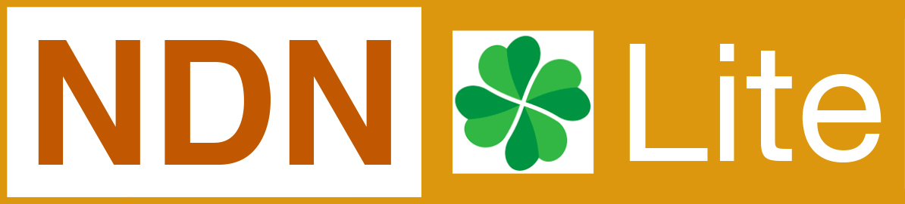

<section>
	<header class="main">
		<h1>Research Topics</h1>
	</header>

	<span class="image right"></span>

	<p>My research topics fall into /system/security, including security and privacy enhancement in network system,
		distributed system, and data engineering. Since I started my Ph.D., I am trying to solve real-world security and
		privacy issues.</p>

	<p>Named Data Networking (NDN) is a proposed future Internet architecture which considers security from the first day
		of its design. NDN requires every data publisher (called producer) to digitally sign their content. I have worked on
		certificate management and access control over NDN, and I am also contributing to the core NDN software like
		ndn-cxx, ndn-lite, and NFD.</p>


	<hr class="major" />

	<h2>Secure Smart Home IoT System</h2>

	<span class="image left"></span>

	<p>What distinguishes our work is that we are trying to localize the security to empower end users.
		With current solutions, the device authentication and access control by default go through the cloud (e.g., you need Internet connection to add a new device to your system) and the security largely relies on IoT app developers’ careful work.
		In our work, NDN-LITE, we are building security independent from the cloud and all the security checking/verification is automatically enforced by our system framework and is transparent to developers.</p>

		<p>NDN-LITE is over Named Data Networking (NDN), an architecture that provides simple solutions to the communication needs of Internet of Things (IoT) in terms of ease-of-use, security, and content delivery.
		To utilize the desirable properties of NDN architecture in IoT scenarios, we are working to provide an integrated framework, dubbed NDN-LITE, to support IoT over NDN.
		NDN-LITE provides solutions to auto conguration, service discovery, data-centric security, content delivery, and
		other needs of IoT application developers.
		Utilizing NDN naming conventions, NDN-LITE aims to create an open environment where IoT applications and different services can easily cooperate and work together. </p>

	<ul class="actions">
		<li><a href="https://conferences.sigcomm.org/acm-icn/2018/index.php" class="button">ACM ICN 2018 Poster
				(Best Poster Award)</a></li>
		<li><a href="https://ndn-lite.named-data.net/" class="button">NDN-Lite home page</a></li>
		<li><a href="https://github.com/named-data-iot/ndn-lite" class="button">NDN-Lite GitHub Repo</a></li>
	</ul>

	<hr class="major" />

	<h2>Leaker Identification in Personally Identifiable Information (PII) Sharing</h2>

	<span class="image right"></span>

	<p>Data sharing among multiple parties becomes increasingly
		common today, so is the potential for data leakage.
		As required by new data protection regulations and laws, when
		data leakage occurs, one must be able to reliably identify the
		leaking party. Existing solutions utilize watermark technology or
		data object allocation strategy to differentiate the data shared
		with different parties to identify potential leakers. However
		the differentiation loses its effectiveness under several attacks,
		including a data sender who leaks the data, or a leaker who denies
		the reception of certain shared data. Worse yet, multiple parties
		might collude and apply a set of operations such as intersection,
		complement, and union to the shared dataset before leaking it,
		making leaker identification more difficult.</p>

	<p>In this work, we propose AuditShare, a sharing system of
		Personally Identifiable Information dataset with reliable leaking
		source identification. First, AuditShare takes advantage of the
		intrinsic properties of identifiable data and allocates data objects
		to individual sharing parties by personally identifiable attribute.
		Second, AuditShare uses oblivious data transfer between the
		sender and receivers, and employs dataset merkle tree as an
		immutable record of the sharing. Third, a knowledge-based
		identification algorithm is proposed in AuditShare to identify
		both non-collusive and collusive leakers. Our evaluation shows
		that, the sharing is practical and with a modest amount of
		leaked data, AuditShare can accurately (with accuracy>99%)
		and undeniably identify the guilty party(s) in cases of noncollusive
		leakage, or collusive leakage by any number of data
		receivers, or even leakage by the data sender.</p>

	<ul class="actions">
		<li><a href="https://arxiv.org/abs/1907.11833" class="button">Preprint Paper (Previous Version)</a></li>
	</ul>


	<hr class="major" />

	<h2>Permissioned Distributed Ledger</h2>

	<span class="image right"></span>

	<p>With the ever growing Internet of Things (IoT) market, ledger systems are facing new challenges to efficiently
		store and secure enormous customer records collected by the IoT devices. The authenticity, availability, and
		integrity of these records are critically important for both business providers and customers. In this work, we
		propse DLedger, a lightweight and resilient distributed ledger system. Instead of a single chain of blocks, DLedger
		builds the ledger over a directed acyclic graph (DAG), so that its operations can tolerate network partition and
		intermittent connectivity. Instead of compute-intensive Proof-of-Work (PoW), DLedger utilizes Proof-of-Authentication
		(PoA), whose light-weight operations are IoT-friendly, to achieve consensus. </p>

	<ul class="actions">
		<li><a href="https://arxiv.org/abs/1902.09031" class="button">Preprint paper</a></li>
	</ul>

	<hr class="major" />

	<h2>DDoS Defense with Stateful Forwarding</h2>

	<span class="image left"></span>

	<p>Distributed Denial of Service (DDoS) attacks have plagued the Internet for decades, but defenses have not
		fundamentally outpaced attackers. Instead, the size and rate of growth in attacks have actually outpaced carriers'
		and DDoS mitigation services' growth. In this work, we comprehensively examine ways in which Named Data Networking
		(NDN), a proposed data-centric Internet architecture, fundamentally addresses some of the principle weaknesses in
		today's DDoS defenses in IP networking. We argue that NDN's architectural changes (even when incrementally deployed)
		can make DDoS attacks fundamentally more difficult to launch and less effective. We present a new DDoS mitigation
		solution -- Fine-grained Interest Traffic Throttling FITT, to leverage NDN's features to combat DDoS in the Internet
		of Things (IoT) age. FITT enables the network to detect DDoS directly from feedback from victims, throttle DDoS
		traffic along its exact path in the network, and perform reinforcement control over the misbehaving entities at their
		sources. In cases like the Mirai attacks, where smart IoT devices (smart cameras, refrigerators, etc.) were able to
		cripple high-capacity service providers using diverse DDoS Tactics Techniques and Procedures (TTPs), FITT would be
		able to precisely squelch the attack traffic at its distributed sources, without disrupting other legitimate
		application traffic running on the same devices. FITT offers an incrementally deployable solution for service
		providers to effectuate the application-level remediation at the sources, which remains unattainable in today's DDoS
		market. Our extensive simulations results show that FITT can effectively throttle attack traffic in a short time and
		achieve over 99% legitimate traffic. </p>

	<ul class="actions">
		<li><a href="https://arxiv.org/abs/1902.09033" class="button">Preprint paper</a></li>
	</ul>

	<hr class="major" />

	<h2>Name-based Access Control over NDN</h2>
	<p>Confidentiality of data in Named Data Networking (NDN) architecture can be directly ensured through encryption by
		protecting the data packets rather than relying on a secured host or channel as any traditional perimeter-based
		access control models do. However, the use of encryption requires efficient and easy-to-use mechanisms for access
		management and key distribution. We presents a Name-Based Access Control (NAC) scheme that leverages specially
		crafted NDN naming conventions (NAC naming conventions) to define and realize access control policies and automate
		the distribution of encryption and decryption keys. Moreover, the structured NDN naming allows NAC to support
		fine-grained control policies in a simple yet powerful way. </p>

	<ul class="actions">
		<li><a href="https://events.afcea.org/Milcom18/Public/Enter.aspx" class="button">IEEE MILCOM 2018 Paper</a></li>
	</ul>

	<hr class="major" />

	<h2>Certificate Management over NDN</h2>
	<p>Named Data Networking (NDN) secures communication at the network layer by requiring all data packets to be signed
		when produced, ensuring data authentication and integrity. As obtaining certicates is essential to signature signing
		and verication, to widely apply digital signature at the network layer, NDN requires usable mechanisms to handle
		certicate issuance, renewal, and revocation. We presents NDNCERT, a distributed certicate management system.
		NDNCERT leverages the notion of named data in NDN and provides an automated mechanism for network nodes, users,
		applications, and application instances to obtain certicates. NDNCERT also enables namespace owners to easily
		delegate subnamespaces to legitimate parties either within the same network node or across dierent nodes. </p>

	<ul class="actions">
		<li><a href="https://github.com/named-data/ndncert" class="button">GitHub Repo</a></li>
	</ul>
</section>